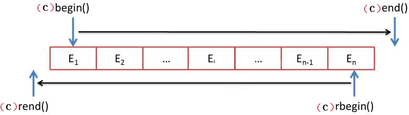
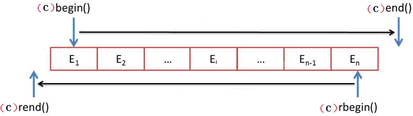

C++ STL deque容器迭代器用法详解
deque 容器迭代器的类型为随机访问迭代器，deque 模板类提供了表 1 所示这些成员函数，通过调用这些函数，可以获得表示不同含义的随机访问迭代器。
表 1 中这些成员函数的具体功能如图 2 所示。

图 2 迭代器的具体功能示意图
从图 2 可以看出，这些成员函数通常是成对使用的，即 begin()/end()、rbegin()/rend()、cbegin()/cend()、crbegin()/crend() 各自成对搭配使用。其中，begin()/end() 和 cbegin/cend() 的功能是类似的，同样 rbegin()/rend() 和 crbegin()/crend() 的功能是类似的。
begin() 和 end() 分别用于指向「首元素」和「尾元素+1」 的位置，下面程序演示了如何使用 begin() 和 end() 遍历 deque 容器并输出其中的元素：
前面提到，STL 还提供有全局的 begin() 和 end() 函数，当操作对象为容器时，它们的功能是上面的 begin()/end() 成员函数一样。例如，将上面程序中的第 8~10 行代码可以用如下代码替换：
cbegin()/cend() 成员函数和 begin()/end() 唯一不同的是，前者返回的是 const 类型的正向迭代器，这就意味着，由 cbegin() 和 cend() 成员函数返回的迭代器，可以用来遍历容器内的元素，也可以访问元素，但是不能对所存储的元素进行修改。
举个例子：
deque 模板类中还提供了 rbegin() 和 rend() 成员函数，它们分别表示指向最后一个元素和第一个元素前一个位置的随机访问迭代器，又常称为反向迭代器（如图 2 所示）。
crbegin()/crend() 组合和 rbegin()/crend() 组合唯一的区别在于，前者返回的迭代器为 const 类型迭代器，不能用来修改容器中的元素，除此之外在使用上和后者完全相同。
例如，如下代码中注释部分是错误的用法：
除此之外，当向 deque 容器添加元素时，deque 容器会申请更多的内存空间，同时其包含的所有元素可能会被复制或移动到新的内存地址（原来占用的内存会释放），这会导致之前创建的迭代器失效。
举个例子：
有关迭代器及其类型的介绍，可以阅读《C++ STL迭代器（iterator）》一节，本节不再做具体介绍。
| 成员函数 | 功能 |
|---|---|
| begin() | 返回指向容器中第一个元素的正向迭代器；如果是 const 类型容器，在该函数返回的是常量正向迭代器。 |
| end() | 返回指向容器最后一个元素之后一个位置的正向迭代器；如果是 const 类型容器，在该函数返回的是常量正向迭代器。此函数通常和 begin() 搭配使用。 |
| rbegin() | 返回指向最后一个元素的反向迭代器；如果是 const 类型容器，在该函数返回的是常量反向迭代器。 |
| rend() | 返回指向第一个元素之前一个位置的反向迭代器。如果是 const 类型容器，在该函数返回的是常量反向迭代器。此函数通常和 rbegin() 搭配使用。 |
| cbegin() | 和 begin() 功能类似，只不过其返回的迭代器类型为常量正向迭代器，不能用于修改元素。 |
| cend() | 和 end() 功能相同，只不过其返回的迭代器类型为常量正向迭代器，不能用于修改元素。 |
| crbegin() | 和 rbegin() 功能相同，只不过其返回的迭代器类型为常量反向迭代器，不能用于修改元素。 |
| crend() | 和 rend() 功能相同，只不过其返回的迭代器类型为常量反向迭代器，不能用于修改元素。 |
C++ 11 新添加的 begin() 和 end() 全局函数也同样适用于 deque 容器。即当操作对象为 deque 容器时，其功能分别和表 1 中的 begin()、end() 成员函数相同，具体用法本节后续会做详细介绍。
表 1 中这些成员函数的具体功能如图 2 所示。

图 2 迭代器的具体功能示意图
从图 2 可以看出，这些成员函数通常是成对使用的，即 begin()/end()、rbegin()/rend()、cbegin()/cend()、crbegin()/crend() 各自成对搭配使用。其中，begin()/end() 和 cbegin/cend() 的功能是类似的，同样 rbegin()/rend() 和 crbegin()/crend() 的功能是类似的。
值得一提的是，以上函数在实际使用时，其返回值类型都可以使用 auto 关键字代替，编译器可以自行判断出该迭代器的类型。
deque容器迭代器的基本用法
deque 容器迭代器常用来遍历容器中存储的各个元素。begin() 和 end() 分别用于指向「首元素」和「尾元素+1」 的位置，下面程序演示了如何使用 begin() 和 end() 遍历 deque 容器并输出其中的元素：
#include <iostream> #include <deque> using namespace std; int main() { deque<int>d{1,2,3,4,5}; //从容器首元素，遍历至最后一个元素 for (auto i = d.begin(); i < d.end(); i++) { cout << *i << " "; } return 0; }运行结果为：
1 2 3 4 5
前面提到，STL 还提供有全局的 begin() 和 end() 函数，当操作对象为容器时，它们的功能是上面的 begin()/end() 成员函数一样。例如，将上面程序中的第 8~10 行代码可以用如下代码替换：
for (auto i = begin(d); i < end(d); i++) {
cout << *i << " ";
}
重新编译运行程序，会发现输出结果和上面一致。cbegin()/cend() 成员函数和 begin()/end() 唯一不同的是，前者返回的是 const 类型的正向迭代器，这就意味着，由 cbegin() 和 cend() 成员函数返回的迭代器，可以用来遍历容器内的元素，也可以访问元素，但是不能对所存储的元素进行修改。
举个例子：
#include <iostream>
#include <deque>
using namespace std;
int main()
{
deque<int>d{1,2,3,4,5};
auto first = d.cbegin();
auto end = d.cend();
//常量迭代器不能用来修改容器中的元素值
//*(first + 1) = 6;//尝试修改容器中元素 2 的值
//*(end - 1) = 10;//尝试修改容器中元素 5 的值
//常量迭代器可以用来遍历容器、访问容器中的元素
while(first<end){
cout << *first << " ";
++first;
}
return 0;
}
运行结果：
1 2 3 4 5
程序中，由于 first 和 end 都是常量迭代器，因此第 10、11 行修改容器内元素值的操作都是非法的。deque 模板类中还提供了 rbegin() 和 rend() 成员函数，它们分别表示指向最后一个元素和第一个元素前一个位置的随机访问迭代器，又常称为反向迭代器（如图 2 所示）。
反向迭代器用于以逆序的方式遍历容器中的元素。例如：需要注意的是，在使用反向迭代器进行 ++ 或 -- 运算时，++ 指的是迭代器向左移动一位，-- 指的是迭代器向右移动一位，即这两个运算符的功能也“互换”了。
#include <iostream>
#include <deque>
using namespace std;
int main()
{
deque<int>d{1,2,3,4,5};
for (auto i = d.rbegin(); i < d.rend(); i++) {
cout << *i << " ";
}
return 0;
}
运行结果为：
5 4 3 2 1
crbegin()/crend() 组合和 rbegin()/crend() 组合唯一的区别在于，前者返回的迭代器为 const 类型迭代器，不能用来修改容器中的元素，除此之外在使用上和后者完全相同。
deque容器迭代器的使用注意事项
首先需要注意的一点是，迭代器的功能是遍历容器，在遍历的同时可以访问（甚至修改）容器中的元素，但迭代器不能用来初始化空的 deque 容器。例如，如下代码中注释部分是错误的用法：
#include <iostream>
#include <vector>
using namespace std;
int main()
{
vector<int>values;
auto first = values.begin();
//*first = 1;
return 0;
}
对于空的 deque 容器来说，可以通过 push_back()、push_front() 或者 resize() 成员函数实现向（空）deque 容器中添加元素。
除此之外，当向 deque 容器添加元素时，deque 容器会申请更多的内存空间，同时其包含的所有元素可能会被复制或移动到新的内存地址（原来占用的内存会释放），这会导致之前创建的迭代器失效。
举个例子：
#include <iostream>
#include <deque>
using namespace std;
int main()
{
deque<int>d;
d.push_back(1);
auto first = d.begin();
cout << *first << endl;
//添加元素，会导致 first 失效
d.push_back(1);
cout << *first << endl;
return 0;
}
程序中第 12 行代码，会导致程序运行崩溃，其原因就在于在创建 first 迭代器之后，deque 容器做了添加元素的操作，导致 first 失效。在对容器做添加元素的操作之后，如果仍需要使用之前以创建好的迭代器，为了保险起见，一定要重新生成。
关注公众号「站长严长生」，在手机上阅读所有教程，随时随地都能学习。内含一款搜索神器，免费下载全网书籍和视频。

微信扫码关注公众号